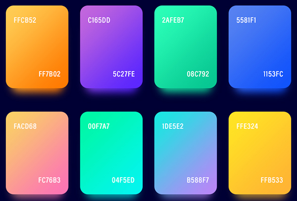
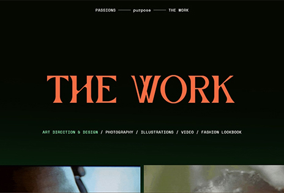

Blog Post 5 - Web Design Research
While looking through web design articles, I found this article on CSS Color-Mix(). It seemed interesting, because I often struggle to make a simple and cohesive color palette for various designs.Read more
Blog Post 4 - Learning Web Design
I’m still kind of having a hard time understanding how grids work in CSS, but this book is helpful... Read more

Blog Post 3 - Interactive Narrative Project
For my project, I plan to make a virtual exhibition that highlights photography with black women as the subjects. My goal is to showcase black women's beauty. I found many websites... Read more
Blog Post 2 - Semantic HTML
Semantics in HTML helps the browser to understand what to do with your website's information. Read more

Blog Post 1 - Internet History
User and interface are currently separate, but in the future, the lines between the two could blend more and more. Read more